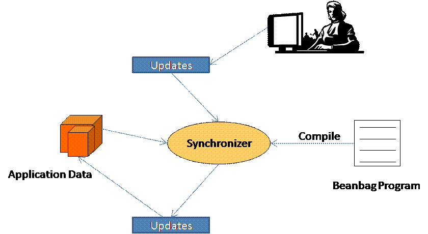

Modern development environment often involves data with complex relationships. For example, in a UML model different diagrams are related, and if we generate code from the model, the generated code and the UML model are related. When users update some part of the data, we need to propagate the update to other parts of data to make all data consistent. This process is called heterogeneous data synchronization. Software procedure to automate synchronization is called synchronizers.
Beanbag is a declarative language to write synchronizers. The feature of Beanbag includes:
The picture below shows an overview of how Beanbag works. Users first write code in the Beanbag language and we compile the code into a synchronizer. When a user tries to update the application data, the update is captured and, together with the application data, is passed to the synchronizer. Given these updates, the synchronizer produces output updates to be applied to the model. The output updates contains the original user update as well as new update to make the model consistent. When we apply the output updates to the model, the model is ensured to be consistent.

We may also consider synchronization as fixing inconsistency that is introduced by user updates. In this sense synchronizers are also called fixing procedures.
Currently there exist two major versions of Beanbag: 1.0 and 0.2. Beanbag 1.0 is completely redesigned from Beanbag 0.2, featuring simpler semantics and stabler synchronization behavior, and is not compatible with Beanbag 0.2. If you start a new project, we recommend using Beanbag 1.0. If you maintain an old project using Beanbag 0.2, you do not need to convert the code to 1.0. We shall still maintain 0.2, fixing bugs and answering questions.
Browser all versions
Beanbag 1.0 is implemented in Haskell. We have developed a library to help integrate the Haskell-based synchronizer into Java projects. Please refer to here for more information.
The system requirement of Beanbag 1.0 is:
Download Beanbag 1.0.0
To start, please read the ESEC/FSE'09 paper and the Haskell implementation guide
Beanbag 0.2 is implemented in Java. The system requirement of Beanbag 0.2 is:
Download Beanbag 0.2.1
To start, please read the technical report of the Beanbag language and the Java implementation guide
You may discuss any topic related to Beanbag in this Google group.
Please tell us if you have developed any application using Beanbag.
| Zhenjiang Hu | Professor at the National Institute of Informatics |
| Hong Mei | Professor at Peking University |
| Hui Song | Ph.D. Student at Peking University |
| Masato Takeichi | Professor at the University of Tokyo |
| Yingfei Xiong | Associate Professor at Peking University |
| Haiyan Zhao | Associate Professor at Peking University |
Please contact us at